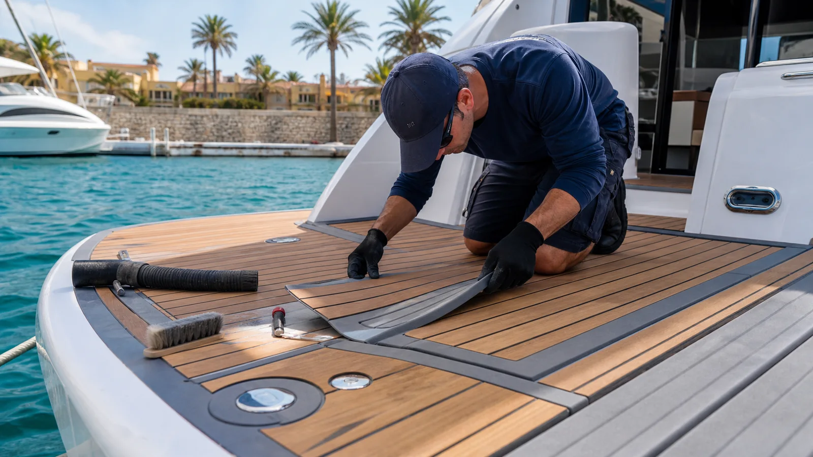

El foam deck combina espuma PE/EVA con un adhesivo sensible a presión. La calidad del material importa, pero la preparación y la instalación determinan gran parte del resultado: un residuo de cera, silicona o humedad puede quedar oculto hasta que el calor y el uso empiezan a levantar el borde.
Seis causas de pérdida de adhesión
- Gelcoat contaminado. Cera, protector, grasa, silicona o pulimento impiden el contacto uniforme.
- Humedad atrapada. Agua bajo el panel reduce adherencia y favorece suciedad en el borde.
- Presión insuficiente. El adhesivo sensible a presión necesita aplicación uniforme, especialmente en texturas.
- Calor concentrado. Superficies oscuras y reflejos intensos elevan la temperatura y pueden deformar materiales.
- Curvas y tapas mal resueltas. Una pieza bajo tensión intenta recuperar su forma.
- Químicos incompatibles. Ácidos, solventes o limpiadores agresivos pueden atacar espuma, adhesivo o sustrato.
Reparar o reemplazar: la decisión práctica
Puede repararse cuando
- El levantamiento es pequeño y localizado.
- El panel todavía coincide con su contorno y no está encogido.
- El sustrato está firme, seco y se puede descontaminar.
- No hay rotura, quemadura ni pérdida profunda de textura.
Conviene reemplazar la pieza cuando
- Existen burbujas o pérdida de adhesión en gran parte del panel.
- La espuma está deformada, rasgada, endurecida o encogida.
- Se necesita forzarla para que alcance el borde original.
- El adhesivo viejo y la suciedad impiden obtener una base estable.
Cómo cuidar un piso EVA en Cartagena
Retira manchas pronto, enjuaga sal y arena, y usa un limpiador compatible con PE/EVA. SeaDek recomienda agua, jabón y cepillado apropiado cuando no se dispone de su limpiador específico, y desaconseja productos ácidos. Evita dejar objetos transparentes que concentren sol sobre la superficie y revisa bordes alrededor de tapas, escaleras y plataforma de baño.
Después de cada salida
- Enjuaga arena, sal, protector solar, comida y combustible cuanto antes.
- No dirijas presión extrema contra juntas y bordes.
- Deja secar antes de cubrir por completo.
- Fotografía un borde que empiece a cambiar para comparar su avance.
Qué necesita una buena instalación
Plantillas precisas, holguras alrededor de herrajes y drenajes, orientación consistente del diseño, preparación compatible con el adhesivo y presión uniforme. En cubiertas con antideslizante agresivo conviene probar la adherencia antes de fabricar todo el kit.
Preguntas frecuentes
¿Por qué se despega?
Preparación insuficiente, humedad, contaminantes, calor, tensión geométrica, químicos o envejecimiento pueden intervenir solos o juntos.
¿Se vuelve a pegar?
Sí en algunos casos localizados. Primero se comprueba que la espuma no se haya deformado y que la base pueda prepararse correctamente.
¿Cómo se limpia?
Con productos compatibles con PE/EVA, enjuague y cepillo apropiado. Evita ácidos y solventes sin autorización del fabricante.
¿Tu foam deck tiene un borde levantado?
Envíanos fotos amplias, primeros planos y ubicación para evaluar reparación o reemplazo de la pieza.
Evaluar piso EVA